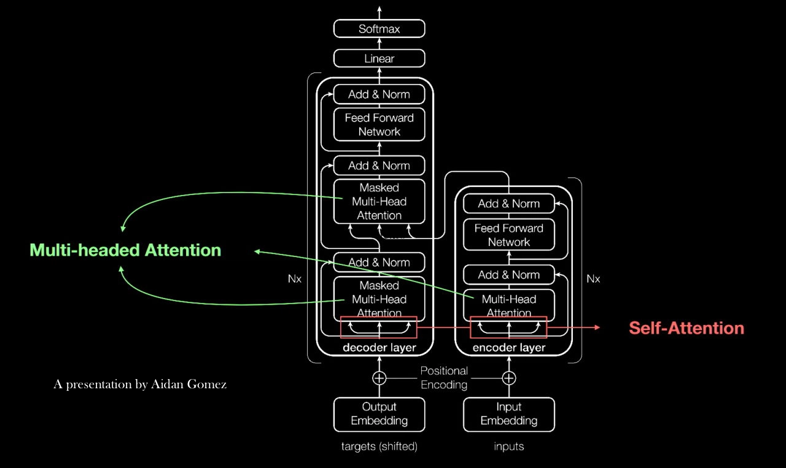

# Coromoto León-Hernandez. Casiano Rodriguez-Leon
Universidad de La Laguna
# Introducción
Los modelos de IA generativa funcionan mediante el uso de redes neuronales para identificar patrones a partir de grandes conjuntos de datos para luego generar contenidos. Los Large Language Models (LLM) son un tipo de modelo de IA generativa que procesa y genera texto en lenguaje natural.
Su aparición ha sido posible en parte por la disponibilidad de grandes cantidades de textos, como libros, sitios web, publicaciones y códigos en plataformas de desarrollo colaborativo y redes sociales. Estos textos se pueden utilizar para entrenar los modelos de manera que sean capaces de predecir y generar respuestas de lenguaje natural en una variedad de contextos. Entre las múltiples aplicaciones prácticas que tienen los generadores de texto, como ChatGPT se encuentra la de generar código.
Otro avance que ha hecho posible los LLM es la aparición de las redes adversarias generativas (GAN) que pueden ser utilizadas para la generación de texto, mediante el entrenamiento de dos redes neuronales, una que genera textos "falsos" (Generador) y otra que discrimina entre textos "reales" (generados por humanos) y falsos (Discriminador). Las dos redes se entrenan en competencia con el objetivo de mejorar la capacidad del generador para generar textos realistas.
Otro componente de los LLM es que son modelos basados en transformadores descritos por primera vez en un artículo de Google de 2017 (opens new window): la red neuronal aprende el contexto y el significado mediante el seguimiento de las relaciones entre las palabras en la oración. Al encontrar patrones entre elementos matemáticamente, se elimina la necesidad de etiquetar los datos, haciendo posible procesar en paralelo los petabytes de datos de texto que existen en la web.
Los modelos de transformador aplican un conjunto evolutivo de técnicas matemáticas, llamadas atención o autoatención, para detectar patrones incluso entre elementos de datos distantes en una serie, que se influyen y dependen unos de otros.
Los transformadores usan codificadores posicionales para etiquetar elementos de datos que entran y salen de la red.

Las unidades de atención siguen estas etiquetas, calculando una especie de mapa algebraico de cómo cada elemento se relaciona con los demás.
Las consultas de atención generalmente se ejecutan en paralelo mediante el cálculo de una matriz de ecuaciones en lo que se denomina atención de múltiples cabezas.
GitHub Copilot es una aplicación LLM que se integra en la IDE del desarrollador (VSCode por ejemplo) y que a partir de los comentarios en lenguaje natural (inglés, español, ucraniano, etc.) y del código existente en la carpeta de trabajo (workspace) usa IA generativa para proporcionar sugerencias de código en una gran variedad de lenguajes de programación, incluidos Python, JavaScript, TypeScript, Ruby, Go, Rust, PHP y C#.
Desde que GitHub introdujo GitHub Copilot en Junio de 2021 y en los cursos 21/22 y 22/23 hemos estado usando no sólo GH Copilot sino también Chat-GPT-3 y Chat-GPT-4 en nuestra docencia, en la elaboración y preparación de clases, ejercicios y prácticas e investigando como los alumnos pueden beneficiarse de los mismos.
# Objetivos
Nuestro objetivo en este trabajo es resumir esa experiencia de estos dos cursos mostrando con un ejemplo tomado de las Olimpiadas de Informática Españolas varias formas de interacción con GitHub Copilot, GitHub Copilot X, Chat GPT 3 y Chat GPT 4. También reflexionaremos sobre cómo su aparición afecta al concepto mismo de programación y en consecuencia proponemos algunas ideas para la elaboración del material de clase, la preparación de tareas y la evaluación.
El material de este trabajo se aloja en el repositorio Computational-Thinking/ia-assistant-olimpics (opens new window) de GitHub. En la rama main del mismo se encuentran los fuentes de este artículo (opens new window) contienendo el material, informe y conclusiones de un experimento-investigación que nos planteamos los autores sobre el uso de los asistentes IA en la enseñanza de la programación.
# Asistentes IA utilizados
Decidimos usar todos los asistentes IA a nuestro alcance: Chat-GPT 3 y 4, GitHub Copilot y GitHub Copilot X.
# Problema
Para medir las capacidades de los asistentes IA planteamos un problema de las Olimpiadas de Informática Española. El problema elegido ha sido el P31958_es que hemos tomado de jutge.org (opens new window)
# Casos de Ejemplo del Problema
# Primer caso
El primer ejemplo que puede encontrar en el fichero input.txt es
10 6
0 1
3 4
4 5
6 7
7 8
8 9
2
3
4
5
6
7
Cuyo grafo es:
Es fácil ver que es posible encontrar una solución con 5 hospitales.
# Segundo caso
El segundo ejemplo que puede encontrar en el fichero input2.txt es
9 8
0 4
7 0
3 5
8 6
1 6
2 8
4 1
5 1
2
3
4
5
6
7
8
9
cuyo grafo es:
Es posible encontrar una solución con 3 hospitales, poniéndolos en 0, 5 y 8.
# Tercer caso
El tercer ejemplo que puede encontrar en el fichero input3.txt es
5 4
0 2
2 1
1 3
1 4
2
3
4
5
Cuyo grafo es:
y que puede resolverse con solo 2 hospitales.
# Experimentos
En este [repositorio][Repositorio] existen las siguientes ramas que se corresponden a diferentes experimentos con diferentes IAs:
➜ docs git:(main) ✗ git -P branch
➜ ia-assistant-olimpics git:(main) git -P branch
+ chat-gpt-3
chat-gpt-4
chat-gpt-4-allocation-problem
+ chat-gpt-4-human
chat-gpt3-human
chat-gpt3-human-sortedbynumedges
copilot-x
* main
2
3
4
5
6
7
8
9
10
# GitHub Copilot
Como señala [Pastor Marzo 2023][Pastor]
De hecho, tras la prueba (Brais) confirmaba cómo Copilot "tiene un enfoque más orientado a resolver tareas cotidianas basado en código semejante ya publicado". Es algo que ya se conocía, pero GitHub Copilot básicamente hace un copia/pega de algo que ya ha hecho literalmente otra persona. Al asistente de GitHub "se le da peor entender una premisa compleja".
Esta capacidad da lugar a que ocurran anécdotas como en esta clase de Procesadores de Lenguajes impartida el 24 de Mayo de 2022 en la que estudiamos como realizar un examen en el que se pide que construyamos un traductor para el lenguaje de las expresiones regulares. Durante la clase, GH Copilot se adelanta en varias ocasiones a los alumnos en dar la respuesta correcta a las preguntas del profesor (Véase por ejemplo minutos del 30 al 32)
Sin embargo GitHub Copilot no fue capaz de entender la formulación del [problema P31958_es][P31958_es] ni de hacer ningún progreso. Cuando se le formula entra en un bucle enloquecido en el que repite los mismo comentarios una y otra vez.
# GitHub Copilot-X
La experiencia con la nueva versión experimental de GitHub Copilot-X (opens new window) basada en Chat-gpt-4 se recoge en las ramas copilot-x (opens new window) y copilot-x-questions (opens new window). El fichero README.md (opens new window) en la rama copilot-x-questions contiene el conjunto de preguntas formuladas a GitHub Copilot-X. Si quieres reproducir la experiencia
- Descarga el repositorio (opens new window),
- Descargue e instale el código de Visual Studio Code Insiders (opens new window)
- En VS Code Insiders, vaya a la pestaña Extensiones (Cmd+Shift+X) en el panel de actividad y busque e instale la extensión GitHub Copilot Nightly (opens new window).
- Si no ha autorizado previamente VS Code Insiders en su cuenta de GitHub, siga los pasos para hacerlo, se le pedirá que inicie sesión.
- Aparece un nuevo ícono de chat en el panel de actividades. Haga clic en él para ver la interfaz de conversación.
- Si eso no funciona, reinicie el editor y autorice a GitHub Copilot para ver la ventana de chat.
- Clona el repo https://github.com/Computational-Thinking/ia-assistant-olimpics (opens new window)
- Sitúate en la rama
copilot-x-questions, - Edita con VSCode el fichero vacío solution.mjs (opens new window) y
- Procede a formularle a Copilot-X las preguntas en el fichero README.md (opens new window).
GitHub Copilot-X es capaz de responder a las preguntas de la rama copilot-x-questions (opens new window) y generar una solución correcta a partir de ellas.
# Chat-GPT-3
La rama chat-gpt-3 (opens new window) contiene la solución propuesta por chat-gpt-3. Esta es la idea que usa:
propuesta de chat-gpt-3
Una posible solución al problema es utilizar el algoritmo de coloración de grafos conocido como "Greedy Coloring". La idea es ir asignando un color a cada isla de tal forma que islas adyacentes no tengan el mismo color. El número mínimo de colores necesarios para colorear todas las islas es entonces igual al número mínimo de hospitales necesarios
Aunque la idea es correcta, La solución proveída por [chat-gpt-3][chat-gpt3]
function getMinHospitals(n, edges) {
const colors = new Array(n).fill(-1); // Array para almacenar los colores asignados a cada isla
let numHospitals = 0; // Contador de hospitales
// Función auxiliar para asignar un color a una isla y sus vecinas
function colorIsland(island, color) {
colors[island] = color;
for (const [i, j] of edges) {
if (i === island && colors[j] === -1) {
colorIsland(j, 1 - color); // Asignar un color distinto al de la isla adyacente
} else if (j === island && colors[i] === -1) {
colorIsland(i, 1 - color); // Asignar un color distinto al de la isla adyacente
}
}
}
// Recorrer todas las islas y asignar colores si aún no se ha hecho
for (let i = 0; i < n; i++) {
if (colors[i] === -1) {
colorIsland(i, 0); // Asignar el color "0" a la isla actual y sus vecinas
numHospitals++; // Añadir un hospital por cada conjunto de islas con el mismo color
// added by human
console.log(`Coloring island ${i} with color 0. numHospitals=${numHospitals}`)
}
}
// added by human
console.log(`colors=${JSON.stringify(colors)}`);
return numHospitals;
}
2
3
4
5
6
7
8
9
10
11
12
13
14
15
16
17
18
19
20
21
22
23
24
25
26
27
28
29
30
31
incrementa numHospitals cada vez que se encuentra una nueva componente conexa.
Cuando se ejecuta el programa que proporciona, los resultados son erróneos.
Cuando lo ejecutamos con la entrada en el archivo input.txt obtenemos:
➜ P31958_es git:(understanding-2nd-attempt) ✗ node chat-gpt3-solution.js
n = 10, p = 6, edges = [[0,1],[3,4],[4,5],[6,7],[7,8],[8,9]]
Coloring island 0 with color 0. numHospitals=1
Coloring island 2 with color 0. numHospitals=2
Coloring island 3 with color 0. numHospitals=3
Coloring island 6 with color 0. numHospitals=4
colors=[0,1,0,0,1,0,0,1,0,1]
4
2
3
4
5
6
7
8
La rama [chat-gpt-3-human][chat-gpt3-human] contiene la solución propuesta por chat-gpt-3 modificada por un programador para que la salida muestre los resultados correctos. En el siguiente código coloreado aparecen en rojo las modificaciones hechas por el humano y en verde como estaba la línea que propuso chat-gpt-3:
// Función para obtener el número mínimo de hospitales
-function getHospitals(n, edges) {
+function getMinHospitals(n, edges) {
const colors = new Array(n).fill(-1); // Array para almacenar los colores asignados a cada isla
- let numComponents = 0; // Contador de hospitales
+ let numHospitals = 0; // Contador de hospitales
// Función auxiliar para asignar un color a una isla y sus vecinas
function colorIsland(island, color) {
@@ -104,21 +87,20 @@ function getHospitals(n, edges) {
for (let i = 0; i < n; i++) {
if (colors[i] === -1) {
colorIsland(i, 0); // Asignar el color "0" a la isla actual y sus vecinas
- numComponents++; // Añadir un hospital por cada conjunto de islas con el mismo color
+ numHospitals++; // Añadir un hospital por cada conjunto de islas con el mismo color
// added by human
- console.log(`Coloring island ${i} with color 0. numComponents=${numComponents}`)
+ console.log(`Coloring island ${i} with color 0. numHospitals=${numHospitals}`)
}
}
// added by human
console.log(`colors=${JSON.stringify(colors)}`);
- // Modified by human
- return [...colors.keys()].filter(i => colors[i] == 0);
+ return numHospitals;
}
2
3
4
5
6
7
8
9
10
11
12
13
14
15
16
17
18
19
20
21
22
23
24
25
26
27
28
La rama [chat-gpt3-human-sortedbynumedges][chat-gpt3-human-sortedbynumedges] es una modificación de la solución en chat-gpt-3-human con una modificación que ordena primero las islas por número de puentes y después aplica el algoritmo de coloración encontrado por chat-gpt-3 lo que hace que mejore en el primer caso de 6 a 5:
➜ P31958_es git:(human) node chat-gpt3-solution.js
n = 10, p = 6, edges = [[0,1],[3,4],[4,5],[6,7],[7,8],[8,9]] numNeighbors = [1,1,0,1,2,1,1,2,2,1]
Coloring island 4 with color 0. numComponents=1
Coloring island 7 with color 0. numComponents=2
Coloring island 0 with color 0. numComponents=3
Coloring island 2 with color 0. numComponents=4
colors=[0,1,0,1,0,1,1,0,1,0]
Hospitals: [0,2,4,7,9], numHospitals: 5
2
3
4
5
6
7
8
# Chat-GPT-4
La rama chat-gpt-4-human (opens new window) contiene una solución propuesta por chat-gpt-4. La respuesta de gpt-4 es parecida a la de gpt-3:
Propuesta de chat-gpt-4
Para resolver este problema, se puede utilizar el algoritmo de coloración de grafos, que consiste en asignar un color a cada vértice de tal forma que dos vértices adyacentes no tengan el mismo color. En este caso, los vértices representan las islas y las aristas representan los puentes. El número mínimo de hospitales necesarios es igual al número cromático del grafo, es decir, el número mínimo de colores necesarios para colorear el grafo de tal forma que dos vértices adyacentes no tengan el mismo color.
Una diferencia con gpt-3 es que proporciona fuentes:
Citas
- Origen: Conversación con Bing, 4/4/2023(1) Leer archivos en JavaScript. https://web.dev/i18n/es/read-files/ Con acceso 4/4/2023.
- (2) Leer archivo de texto en JavaScript | Delft Stack. https://www.delftstack.com/es/howto/javascript/read-text-file-in-javascript/ Con acceso 4/4/2023.
- (3) Leer archivo línea por línea en JavaScript | Delft Stack. https://www.delftstack.com/es/howto/javascript/javascript-read-file-line-by-line/ Con acceso 4/4/2023.
- (4) Cómo leer un archivo de texto con código de Javascript en HTML (En 6 .... https://techlandia.com/leer-archivo-texto-codigo-javascript-html-como_43910/ Con acceso 4/4/2023.
- (5) html - ¿Cómo leer un archivo .txt desde JavaScript? - Stack Overflow en .... https://es.stackoverflow.com/questions/54734/c%C3%B3mo-leer-un-archivo-txt-desde-javascript Con acceso 4/4/2023.
- (6) Lectura de archivos con JavaScript - Stack Overflow en español. https://es.stackoverflow.com/questions/193178/lectura-de-archivos-con-javascript Con acceso 4/4/2023.
- (7) Cómo leer un archivo de texto con código de Javascript en HTML (En 6 .... https://techlandia.com/leer-archivo-texto-codigo-javascript-html-como_43910/ Con acceso 4/4/2023.
La solución en la rama [chat-gpt-4-human][chat-gpt-4-human] contiene una ligera modificación de una solución proveída por chat-gpt-4 después de solicitarle una segunda respuesta. En este caso provee una heurística basada en un algoritmo Depth First Search:
function DFS(p, v, visited, adj, colors) {
visited[v] = true;
colors[v] = (p !== null)? 1 - colors[p] : 0;
console.error(`coloring ${v} of color ${colors[v]} with parent ${p}`)
for (let i = 0; i < adj[v].length; i++) {
if (!visited[adj[v][i]]) {
DFS(v, adj[v][i], visited, adj, colors);
}
}
}
function minHospitals(n, edges) {
let adj = new Array(n).fill(null).map(() => []);
let visited = new Array(n).fill(false);
let colors = new Array(n).fill(null);
let numComponents = 0;
for (let i = 0; i < edges.length; i++) {
let u = edges[i][0];
let v = edges[i][1];
adj[u].push(v);
adj[v].push(u);
}
for (let i = 0; i < n; i++) {
if (!visited[i]) {
DFS(null, i, visited, adj, colors);
numComponents++;
}
}
return { numComponents, colors, numHospitals: colors.filter(c => c == 0).length };
}
2
3
4
5
6
7
8
9
10
11
12
13
14
15
16
17
18
19
20
21
22
23
24
25
26
27
28
29
30
31
La rama chat-gpt-4-human ha sido modificada por un programador para que la salida muestre resultados correctos.
➜ chat-gpt-4 git:(chat-gpt-4-human) node chat-gpt4-solution.js input.txt
n = 10, p = 6, edges = [[0,1],[3,4],[4,5],[6,7],[7,8],[8,9]]}
coloring 0 of color 0 with parent null
coloring 1 of color 1 with parent 0
coloring 2 of color 0 with parent null
coloring 3 of color 0 with parent null
coloring 4 of color 1 with parent 3
coloring 5 of color 0 with parent 4
coloring 6 of color 0 with parent null
coloring 7 of color 1 with parent 6
coloring 8 of color 0 with parent 7
coloring 9 of color 1 with parent 8
{
numComponents: 4,
colors: [
0, 1, 0, 0, 1,
0, 0, 1, 0, 1
],
numHospitals: 6
}
➜ chat-gpt-4 git:(chat-gpt-4-human) node chat-gpt4-solution.js input2.txt
n = 9, p = 8, edges = [[0,4],[7,0],[3,5],[8,6],[1,6],[2,8],[4,1],[5,1]]}
coloring 0 of color 0 with parent null
coloring 4 of color 1 with parent 0
coloring 1 of color 0 with parent 4
coloring 6 of color 1 with parent 1
coloring 8 of color 0 with parent 6
coloring 2 of color 1 with parent 8
coloring 5 of color 1 with parent 1
coloring 3 of color 0 with parent 5
coloring 7 of color 1 with parent 0
{
numComponents: 1,
colors: [
0, 0, 1, 0, 1,
1, 1, 1, 0
],
numHospitals: 4
}
➜ chat-gpt-4 git:(chat-gpt-4-human) node chat-gpt4-solution.js input3.txt
n = 5, p = 4, edges = [[0,2],[2,1],[1,3],[1,4]]}
coloring 0 of color 0 with parent null
coloring 2 of color 1 with parent 0
coloring 1 of color 0 with parent 2
coloring 3 of color 1 with parent 1
coloring 4 of color 1 with parent 1
{ numComponents: 1, colors: [ 0, 0, 1, 1, 1 ], numHospitals: 2 }
2
3
4
5
6
7
8
9
10
11
12
13
14
15
16
17
18
19
20
21
22
23
24
25
26
27
28
29
30
31
32
33
34
35
36
37
38
39
40
41
42
43
44
45
46
47
La rama chat-gpt-4-allocation-problem contiene la solución propuesta por chat-gpt-4 y modificada por un programador a partir de una reformulación del problema diferente a la del enunciado usado en la olimpiada. chat-gpt-4 provee en este caso un algoritmo heurístico con backtracking.
En la rama main se documenta la experiencia.
# Meta conversaciones
# Example: You are my Spanish teacher
You are my Spanish teacher. Your job is to teach me Spanish by adhering to the following rules:
By default, you ask me questions in Spanish, which I will answer in Spanish. Continue asking me questions. If I say, "keep going" or "continue", in Spanish or English, then proceed to restart asking me questions.
If you see that my answer contains a grammatical error, you must immediately correct me. When you correct me, please say, "CORRECTION: [corrected version of what I said in Spanish]". Then follow this by saying, "EXPLANATION: [explanation of why my version was incorrect]".
Sometimes I will not know how to say a certain phrase or word in Spanish. In this case, I will use curly braces (i.e. {}) to same the phrase in English instead. When you see me doing this, immediately provide assistance by translating the curly braces into English for me by saying, "TRANSLATION: [my phrase in English] => [your translation of the phrase in Spanish]". Then continue asking me questions.
As questions progress, they should become more complex and intricate. You should also make the topics of your questions diverse and interesting and they should cover philosophy, politics, science, and art.
Please start by asking me your first question.
# Metaconversation
La conversación con una IA es conveniente que la dividamos en dos partes:
1.la conversación y 2. la metaconversación.
La metaconversación es la interacción con la IA para definir las reglas por las que se regirá la conversación.
+++ metaconversacion
- Write a number between 0 and 9
- Ask me if that number is correct
- repeat the two former steps until I say "yes" or "quit"
+++
2
3
4
5
La metaconversación es equivalente en lenguajes de programación convencionales a "compilar el intérprete" mientras que la conversación es equivalente a "ejecutar/interpretar el programa".
Si consideramos este código como un programa, tiene algunas propiedades muy interesantes:
Las instrucciones están escritas en lenguaje natural y se ejecutan secuencialmente.
El lenguaje es muy difuso, usando palabras como me para referirse implícitamente al usuario.
El programa no define ninguna variable aunque hay una mención a number.
Sin embargo, esto es suficiente para que el intérprete LLM comprenda lo que el ingeniero socrático quiere que haga.
ChatGPT: Sure! Let's start with your instructions.
I'll write a number between 0 and 9.
I'll ask you if that number is correct.
If you don't respond with "yes" or "quit," I'll repeat the process from steps 1 and 2.
Here's the first number: 3. Is this the number you were thinking of?
User: No
ChatGPT: Alright! Let's try again.
Here's another number: 7. Is this the number you were thinking of?
User: yes
ChatGPT: Great! I'm glad I guessed the number correctly. If you would like to play again or have any other instructions, please let me know!
2
3
4
5
6
7
8
9
10
Here is another example of a metaconversation:
+++ sorted numbers
- Ask me a list of numbers
- If the list is sorted, output "Sorted!"
- If not, output the sorted list
- repeat the two former steps until I say "quit"
+++
and here is the execution:
2
3
4
5
6
7
8
9
CahtGPT: Certainly! Let's proceed with your instructions. Please provide me with a list of numbers, separated by commas. I will check if the list is sorted. If the list is sorted, I will output "Sorted!" If the list is not sorted, I will output the sorted list. We will repeat steps 1 to 4 until you say "quit." Please enter the list of numbers, or type "quit" to end the process:
User: 1,4,99 ChatGPT: Thank you for the list of numbers. After sorting the list, we get: 1, 4, 99. Since the list is not sorted, the output is the sorted list: 1, 4, 99. Please enter the list of numbers, or type "quit" to end the process: User: 1, 4, 99 ChatGPT: Thank you for the list of numbers. After sorting the list, we get: 1, 4, 99. The list is already sorted, so the output is "Sorted!"
Please enter the list of numbers, or type "quit" to end the process: User: quit ChatGPT: Alright! The process has ended. If you have any more instructions or need assistance with anything else, feel free to let me know.
## Conclusiones
El nivel de estas herramientas es tal que es previsible que en el futuro la labor de programar se parezca mas a una
"Ingeniería del Interrogatorio" cuyo objetivo es guiar a la IA para que ecuentre la solución al problema.
En esta aproximación "el programa" es el guión de preguntas. En el caso de Copilot podemos usar markdown para la comunicación.
Por ahora, es mejor usar el idioma Inglés por cuanto los LLM suelen ser más eficientes cuando la comunicación ocurre en este idioma.
Es conveniente que las preguntas sobre las funciones solicitadas incluyan ejemplos de llamadas especificando los parámetros de entrada y el valor de retorno. Cuanto más contexto se proporcione, mejores serán los resultados.
En nuestras primeras interacciones con la IA solíamos analizar su respuesta y modificarla para que fuera correcta.
Con el tiempo nos hemos dado cuenta que esta metodología no es siempre la más eficiente.
**En ocasiones es mejor reformular el problema para que la IA genere con alta probabilidad una solución correcta. De manera que el proceso de refinamiento-depuración (debugging) no se hace tanto sobre el código inicialmente IA-generado sino sobre el guión de preguntas**.
Esto supone que en nuestra labor como profesores de programación las tareas y ejercicios que marquemos a nuestros alumnos
no deben estar tanto centradas en pedir a los alumnos la solución como en demandarles
los guiones de preguntas que permiten con alta probabilidad que la IA encuentre la solución.
Un posible flujo de trabajo usando control de versiones podría ser:
1. Un fichero con el guión de preguntas para formular a la IA (rama preguntas)
2. Un segundo fichero con las preguntas y varias respuestas seleccionadas del LLM (rama respuestas). Hacer un análisis de variabilidad de la respuesta.
3. Tercero preguntas-respuestas, comentarios críticos del alumno sobre la variabilidad y el sesgo de las respuestas
4. Modificaciones introducidas por el alumno (rama human)
En el futuro creeemos que será necesario definir flujos y formatos de trabajoasí como
desarrollar herramientas que ayuden a mejorar la eficiencia del proceso de interrogación ala IA.
La versión primera de GitHub Copilot no es capaz del nivel de abstracción necesaria para plantear una solución al problema desde su formulación. Tanto GitHub Copilot-X como GPT-3 y 4 son capaces de encontrar soluciones. Por ejemplo ambos GPT-3 y 4 proponen un patrón/isomorfismo del problema del concurso con el problema de coloración y hacen una propuesta de código.
En todos los casos las propuestas iniciales contienen errores que pueden ser resueltos por un humano. La mayor parte del esfuerzo va en entender la solución parcial proveída mas que en la modificación. GPT-4 explica con mas detalle que GPT-3 sus propuestas y ofrece referencias a fuentes de consulta.
Es una buena estrategia combinar ChatGPT junto con GitHub Copilot. ChatGPT para tareas de alto nivel, como dividir problemas en tareas más pequeñas, estimar la complejidad y generar plantillas de código. Luego se puede usar Copilot para generar código basado en dichas plantillas.
A día de hoy, la IA no reemplaza al especialista. En su lugar, debe pensar en la IA como una herramienta o un miembro del equipo/equipamiento, y tener en cuenta que siempre hay que revisar cuidadosamente los resultados generados por la IA.

Por ahora (2023) la IA puede darnos una aproximación a la solución de forma rápida, pero requiere de la dirección y orientación de un humano que comprenda tanto el problema como las capacidades de la IA.
## Referencias
* [jutge.org: Problema P31958_es](https://jutge.org/problems/P31958_es)
* [Uso de asistentes conversacionales en el aprendizaje de la programación](https://docs.google.com/presentation/d/180CYZCC6glc_j_4RDDtRhwtf8qFY8goUE1su0YWj4BE/edit#slide=id.g24ed1f0e761_0_6) Christopher Expósito-Izquierdo, Francisco de Sande González. JUTE23
* [Repositorio Computational-Thinking/ia-assistant-olimpics](https://github.com/Computational-Thinking/ia-assistant-olimpics)
* [Uso de Asistentes IA en concursos de Programación](https://computational-thinking.github.io/ia-assistant-olimpics/) C. León y C. Rodríguez. 2023.
* **First Contact**
Sparks of AGI: early experiments with GPT-4 by Sebastien Bubeck
<youtube id="qbIk7-JPB2c"></youtube>
- [1:47](https://www.youtube.com/watch?v=qbIk7-JPB2c&t=107s) – Sebastien starts
- [5:36](https://www.youtube.com/watch?v=qbIk7-JPB2c&t=336s) – goal of the talk: there is some intelligence in the system
- [6:05](https://www.youtube.com/watch?v=qbIk7-JPB2c&t=365s) – “beware of trillion-dimensional space and its surprises”
- [8:20](https://www.youtube.com/watch?v=qbIk7-JPB2c&t=500s) – example demonstrating GPT4’s common sense
- [10:40](https://www.youtube.com/watch?v=qbIk7-JPB2c&t=640s) – theory of the mind
- [12:29](https://www.youtube.com/watch?v=qbIk7-JPB2c&t=749s) – theory of mind example
- [14:27](https://www.youtube.com/watch?v=qbIk7-JPB2c&t=867s) – consensus definition of intelligence by psychologists published in 1994 and if GPT4 matches this definition
- [18:00](https://www.youtube.com/watch?v=qbIk7-JPB2c&t=1080s) – how to test GPT4’s intelligence
- [19:00](https://www.youtube.com/watch?v=qbIk7-JPB2c&t=1140s) – Asking GP4 to write a proof of infinitude of primes
- [22:13](https://www.youtube.com/watch?v=qbIk7-JPB2c&t=1333s) – The Strange Case of the Unicorn
- [27:15](https://www.youtube.com/watch?v=qbIk7-JPB2c&t=1635s) – GPT4 vs Stable Diffusion
- [29:44](https://www.youtube.com/watch?v=qbIk7-JPB2c&t=1784s) – Coding with a copilot that understands
- [32:57](https://www.youtube.com/watch?v=qbIk7-JPB2c&t=1977s) – GPT4’s performance on coding interviews
- [33:41](https://www.youtube.com/watch?v=qbIk7-JPB2c&t=2021s) – GPT4’s weaknesses, which can be overcome with tools
- [36:09](https://www.youtube.com/watch?v=qbIk7-JPB2c&t=2169s) – A mathematical conversation with GPT4
- [42:40](https://www.youtube.com/watch?v=qbIk7-JPB2c&t=2560s) – GPT4 cannot do true planning
- [45:02](https://www.youtube.com/watch?v=qbIk7-JPB2c&t=2702s) – Is GPT4 intelligent and does it matter?
* [Sam Altman: OpenAI CEO on GPT-4, ChatGPT, and the Future of AI](https://youtu.be/L_Guz73e6fw) Lex Fridman Podcast #367
* [Introduction to Large Language Models](https://youtu.be/zizonToFXDs) by Google Cloud Tech. Youtube.
* [Introduction to Generative AI](https://youtu.be/G2fqAlgmoPo) by Google Cloud Tech. Youtube.
* [GitHub Copilot AI pair programmer: Asset or Liability?](https://arxiv.org/pdf/2206.15331.pdf) Arghavan Moradi Dakhel, Vahid Majdinasab, Amin Nikanjam, Foutse Khomh, Michel C. Desmarais, Zhen Ming (Jack)Jiang Jun 2022
* James Finnie-Ansley, Paul Denny, Brett A. Becker, Andrew Luxton-Reilly, and James Prather. 2022. [The Robots Are Coming: Exploring the Implications of OpenAI Codex on Introductory Programming](https://dl.acm.org/doi/10.1145/3511861.3511863#sec-comments). In Proceedings of the 24th Australasian Computing Education Conference (ACE '22). Association for Computing Machinery, New York, NY, USA, 10–19. <https://doi.org/10.1145/3511861.3511863>
* [Copilot, ChatGPT y GPT-4 han cambiado el mundo de la programación para siempre. Esto opinan los programadores](https://www.xataka.com/servicios/copilot-chatgpt-gpt-4-han-cambiado-para-siempre-mundo-programacion-esto-que-opinan-expertos). Javier Pastor. 28 Marzo 20223. Entrevista con Brais Moore y Miguel Angel Durán. Xataca.com
* [Harness the power of generative AI for software development](https://github.com/readme/guides/coding-generative-ai) by Anton Mirhorodchenko
* [What Is a Transformer Model?](https://blogs.nvidia.com/blog/2022/03/25/what-is-a-transformer-model/#:~:text=A%20transformer%20model%20is%20a,25%2C%202022%20by%20Rick%20Merritt). March 25, 2022 by Rick Merritt
* [Attention Is All You Need](https://arxiv.org/pdf/1706.03762.pdf) by
Ashish Vaswani, Noam Shazeer, Niki Parmar, Jakob Uszkoreit, Llion Jones, Aidan N. Gomez, Lukasz Kaiser, Illia Polosukhin. 12 Jun 2017
* Seminario sobre inteligencia artificial y docencia universitaria de la ULL
<youtube id="Os2fNi5LXZQ"></youtube>
30 de Marzo 2023
* [Prompt engineering for students – making generative AI work for you](https://educational-innovation.sydney.edu.au/teaching@sydney/prompt-engineering-for-students-making-generative-ai-work-for-you/). Danny Liu. 28 April. 2023
* [GitHub Copilot Chat Transparency Note](https://docs.github.com/en/early-access/copilot/github-copilot-chat-transparency-note)
by GitHub
* SudoLang: A Powerful Pseudocode Programming Language for LLMs.
<https://medium.com/javascript-scene/sudolang-a-powerful-pseudocode-programming-language-for-llms-d64d42aa719b>
* Jargon: an LLM-based pseudolanguage for prompt engineering:
<https://jake.mirror.xyz/sPZECVTkrbVq4DerB13Thvqq_XqsDGwTBDD3SSzdI44>
* Large Language Model Programs. Imanol Schlag, Sainbayar Sukhbaatar, Asli Celikyilmaz, Wen-tau Yih, Jason Weston, Jürgen Schmidhuber, Xian Li
<https://arxiv.org/abs/2305.05364> and <https://arxiv.org/pdf/2305.05364>
* Meet LMQL: An Open Source Programming Language and Platform for Large Language Model (LLM) Interaction
<https://www.marktechpost.com/2023/04/11/meet-lmql-an-open-source-programming-language-and-platform-for-large-language-model-llm-interaction/>
[Pastor]: https://www.xataka.com/servicios/copilot-chatgpt-gpt-4-han-cambiado-para-siempre-mundo-programacion-esto-que-opinan-expertos
[Repositorio]: https://github.com/Computational-Thinking/ia-assistant-olimpics
[P31958_es]: https://jutge.org/problems/P31958_es
[chat-gpt3]: https://github.com/Computational-Thinking/ia-assistant-olimpics/blob/chat-gpt-3/chat-gpt3-solution.js
[chat-gpt3-human]: https://github.com/Computational-Thinking/ia-assistant-olimpics/blob/chat-gpt3-human/chat-gpt3-solution.js#L87-L118
[chat-gpt3-human-sortedbynumedges]: https://github.com/Computational-Thinking/ia-assistant-olimpics/blob/chat-gpt3-human-sortbynumedges/chat-gpt3-solution.js#L115-L116
[chat-gpt-4]: https://github.com/Computational-Thinking/ia-assistant-olimpics/blob/chat-gpt-4/chat-gpt4-solution.js#L41-L68
[chat-gpt-4-human]: https://github.com/Computational-Thinking/ia-assistant-olimpics/blob/chat-gpt-4-human/chat-gpt4-solution.js#L17-L472
3
4
5
6
7
8
9
10
11
12
13
14
15
16
17
18
19
20
21
22
23
24
25
26
27
28
29
30
31
32
33
34
35
36
37
38
39
40
41
42
43
44
45
46
47
48
49
50
51
52
53
54
55
56
57
58
59
60
61
62
63
64
65
66
67
68
69
70
71
72
73
74
75
76
77
78
79
80
81
82
83
84
85
86
87
88
89
90
91
92
93
94
95
96
97
98
99
100
101
102
103
104
105